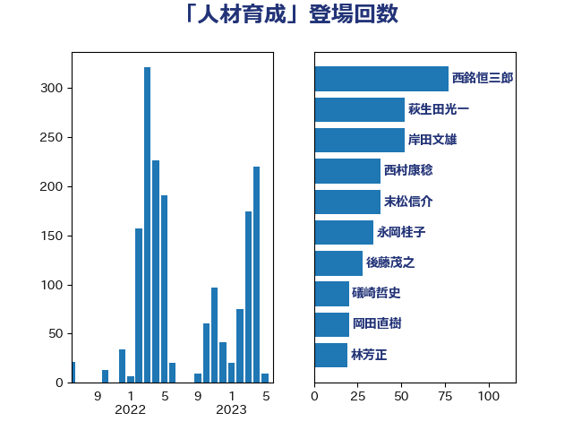

単語「人材育成」

| 西銘恒三郎 | 自由民主党 | 77 回 |
| 萩生田光一 | 自由民主党 | 52 回 |
| 岸田文雄 | 自由民主党 | 52 回 |
| 西村康稔 | 自由民主党 | 38 回 |
| 末松信介 | 自由民主党 | 38 回 |
| 永岡桂子 | 自由民主党 | 34 回 |
| 後藤茂之 | 自由民主党 | 28 回 |
| 礒崎哲史 | 国民民主党 | 20 回 |
| 岡田直樹 | 自由民主党 | 20 回 |
| 林芳正 | 自由民主党 | 19 回 |
| 加藤勝信 | 自由民主党 | 19 回 |
| 斉藤鉄夫 | 公明党 | 17 回 |
| 柴田巧 | 日本維新の会 | 14 回 |
| 齋藤健 | 自由民主党 | 13 回 |
| 野田聖子 | 自由民主党 | 12 回 |
| 竹谷とし子 | 公明党 | 11 回 |
| 松本剛明 | 自由民主党 | 11 回 |
| 上野通子 | 自由民主党 | 11 回 |
| 矢倉克夫 | 公明党 | 10 回 |
| 高橋はるみ | 自由民主党 | 9 回 |
| 田名部匡代 | 立憲民主党 | 9 回 |
| 渡辺博道 | 自由民主党 | 9 回 |
| 岬麻紀 | 日本維新の会 | 9 回 |
| 鈴木義弘 | 国民民主党 | 8 回 |
| 平林晃 | 公明党 | 8 回 |
| 小林鷹之 | 自由民主党 | 8 回 |
| 高橋光男 | 公明党 | 7 回 |
| 西岡秀子 | 国民民主党 | 7 回 |
| 横山信一 | 公明党 | 7 回 |
| 梅村みずほ | 日本維新の会 | 7 回 |
| 川合孝典 | 国民民主党 | 7 回 |
| 山崎正恭 | 公明党 | 7 回 |
| 大島敦 | 立憲民主党 | 7 回 |
| 阿部司 | 日本維新の会 | 6 回 |
| 赤池誠章 | 自由民主党 | 6 回 |
| 若松謙維 | 公明党 | 6 回 |
| 熊谷裕人 | 立憲民主党 | 6 回 |
| 漆間譲司 | 日本維新の会 | 6 回 |
| 浅野哲 | 国民民主党 | 6 回 |
| 池田佳隆 | 自由民主党 | 6 回 |
| 本田顕子 | 自由民主党 | 6 回 |
| 高橋千鶴子 | 日本共産党 | 5 回 |
| 高木かおり | 日本維新の会 | 5 回 |
| 音喜多駿 | 日本維新の会 | 5 回 |
| 金子恵美 | 立憲民主党 | 5 回 |
| 金子恭之 | 自由民主党 | 5 回 |
| 野村哲郎 | 自由民主党 | 5 回 |
| 進藤金日子 | 自由民主党 | 5 回 |
| 若宮健嗣 | 自由民主党 | 5 回 |
| 竹内譲 | 公明党 | 5 回 |
| 神谷裕 | 立憲民主党 | 5 回 |
| 田中健 | 国民民主党 | 5 回 |
| 片山さつき | 自由民主党 | 5 回 |
| 本田太郎 | 自由民主党 | 5 回 |
| 小倉將信 | 自由民主党 | 5 回 |
| 土田慎 | 自由民主党 | 5 回 |
| 中川宏昌 | 公明党 | 5 回 |
| 上田清司 | 国民民主党 | 5 回 |
| 一谷勇一郎 | 日本維新の会 | 5 回 |
| 輿水恵一 | 公明党 | 4 回 |
| 角田秀穂 | 公明党 | 4 回 |
| 荒井優 | 立憲民主党 | 4 回 |
| 空本誠喜 | 日本維新の会 | 4 回 |
| 石井苗子 | 日本維新の会 | 4 回 |
| 石井章 | 日本維新の会 | 4 回 |
| 牧山ひろえ | 立憲民主党 | 4 回 |
| 湯原俊二 | 立憲民主党 | 4 回 |
| 浜田靖一 | 自由民主党 | 4 回 |
| 梅谷守 | 立憲民主党 | 4 回 |
| 根本幸典 | 自由民主党 | 4 回 |
| 山田賢司 | 自由民主党 | 4 回 |
| 山口那津男 | 公明党 | 4 回 |
| 小沢雅仁 | 立憲民主党 | 4 回 |
| 宮崎政久 | 自由民主党 | 4 回 |
| 太田房江 | 自由民主党 | 4 回 |
| 吉田豊史 | 無所属 | 4 回 |
| 吉田宣弘 | 公明党 | 4 回 |
| 勝部賢志 | 立憲民主党 | 4 回 |
| 住吉寛紀 | 日本維新の会 | 4 回 |
| 三浦信祐 | 公明党 | 4 回 |
| ながえ孝子 | 無所属 | 4 回 |
| 鳩山二郎 | 自由民主党 | 3 回 |
| 足立康史 | 日本維新の会 | 3 回 |
| 西野太亮 | 自由民主党 | 3 回 |
| 西村明宏 | 自由民主党 | 3 回 |
| 羽生田俊 | 自由民主党 | 3 回 |
| 笠井亮 | 日本共産党 | 3 回 |
| 石橋通宏 | 立憲民主党 | 3 回 |
| 田畑裕明 | 自由民主党 | 3 回 |
| 村田享子 | 立憲民主党 | 3 回 |
| 平沼正二郎 | 自由民主党 | 3 回 |
| 川田龍平 | 立憲民主党 | 3 回 |
| 岸真紀子 | 立憲民主党 | 3 回 |
| 岡本三成 | 公明党 | 3 回 |
| 山際大志郎 | 自由民主党 | 3 回 |
| 小沼巧 | 立憲民主党 | 3 回 |
| 大野敬太郎 | 自由民主党 | 3 回 |
| 大塚耕平 | 国民民主党 | 3 回 |
| 堀場幸子 | 日本維新の会 | 3 回 |
| 友納理緒 | 自由民主党 | 3 回 |
| 佐藤英道 | 公明党 | 3 回 |
| 中西祐介 | 自由民主党 | 3 回 |
| 中川康洋 | 公明党 | 3 回 |
| 三浦靖 | 自由民主党 | 3 回 |
| こやり隆史 | 自由民主党 | 3 回 |
| 黄川田仁志 | 自由民主党 | 2 回 |
| 鬼木誠 | 立憲民主党 | 2 回 |
| 須藤元気 | 無所属 | 2 回 |
| 青山大人 | 立憲民主党 | 2 回 |
| 長谷川英晴 | 自由民主党 | 2 回 |
| 長友慎治 | 国民民主党 | 2 回 |
| 鎌田さゆり | 立憲民主党 | 2 回 |
| 鈴木俊一 | 自由民主党 | 2 回 |
| 金村龍那 | 日本維新の会 | 2 回 |
| 里見隆治 | 公明党 | 2 回 |
| 遠藤良太 | 日本維新の会 | 2 回 |
| 道下大樹 | 立憲民主党 | 2 回 |
| 谷合正明 | 公明党 | 2 回 |
| 谷公一 | 自由民主党 | 2 回 |
| 藤井一博 | 自由民主党 | 2 回 |
| 葉梨康弘 | 自由民主党 | 2 回 |
| 自見はなこ | 自由民主党 | 2 回 |
| 簗和生 | 自由民主党 | 2 回 |
| 笠浩史 | 無所属 | 2 回 |
| 竹内真二 | 公明党 | 2 回 |
| 秋葉賢也 | 自由民主党 | 2 回 |
| 福重隆浩 | 公明党 | 2 回 |
| 福島伸享 | 無所属 | 2 回 |
| 石井正弘 | 自由民主党 | 2 回 |
| 石井啓一 | 公明党 | 2 回 |
| 田村智子 | 日本共産党 | 2 回 |
| 玄葉光一郎 | 立憲民主党 | 2 回 |
| 牧島かれん | 自由民主党 | 2 回 |
| 片山大介 | 日本維新の会 | 2 回 |
| 泉健太 | 立憲民主党 | 2 回 |
| 沢田良 | 日本維新の会 | 2 回 |
| 池下卓 | 日本維新の会 | 2 回 |
| 水野素子 | 立憲民主党 | 2 回 |
| 森田俊和 | 立憲民主党 | 2 回 |
| 杉久武 | 公明党 | 2 回 |
| 星野剛士 | 自由民主党 | 2 回 |
| 日下正喜 | 公明党 | 2 回 |
| 新垣邦男 | 立憲民主党 | 2 回 |
| 斎藤嘉隆 | 立憲民主党 | 2 回 |
| 徳永久志 | 立憲民主党 | 2 回 |
| 庄子賢一 | 公明党 | 2 回 |
| 岩田和親 | 自由民主党 | 2 回 |
| 山田美樹 | 自由民主党 | 2 回 |
| 山本剛正 | 日本維新の会 | 2 回 |
| 山本佐知子 | 自由民主党 | 2 回 |
| 小林茂樹 | 自由民主党 | 2 回 |
| 寺田稔 | 自由民主党 | 2 回 |
| 宮路拓馬 | 自由民主党 | 2 回 |
| 宮沢洋一 | 自由民主党 | 2 回 |
| 宮本岳志 | 日本共産党 | 2 回 |
| 奥下剛光 | 日本維新の会 | 2 回 |
| 堂故茂 | 自由民主党 | 2 回 |
| 古賀篤 | 自由民主党 | 2 回 |
| 古川禎久 | 自由民主党 | 2 回 |
| 古川直季 | 自由民主党 | 2 回 |
| 前原誠司 | 国民民主党 | 2 回 |
| 伊藤俊輔 | 立憲民主党 | 2 回 |
| 伊東信久 | 日本維新の会 | 2 回 |
| 伊佐進一 | 公明党 | 2 回 |
| 今井絵理子 | 自由民主党 | 2 回 |
| 仁木博文 | 無所属 | 2 回 |
| 中谷真一 | 自由民主党 | 2 回 |
| 鶴保庸介 | 自由民主党 | 1 回 |
| 鰐淵洋子 | 公明党 | 1 回 |
| 高鳥修一 | 自由民主党 | 1 回 |
| 高見康裕 | 自由民主党 | 1 回 |
| 高良鉄美 | 無所属 | 1 回 |
| 高市早苗 | 自由民主党 | 1 回 |
| 馬淵澄夫 | 立憲民主党 | 1 回 |
| 青木愛 | 立憲民主党 | 1 回 |
| 青木一彦 | 自由民主党 | 1 回 |
| 鈴木貴子 | 自由民主党 | 1 回 |
| 鈴木英敬 | 自由民主党 | 1 回 |
| 鈴木憲和 | 自由民主党 | 1 回 |
| 野間健 | 立憲民主党 | 1 回 |
| 野田国義 | 立憲民主党 | 1 回 |
| 近藤和也 | 立憲民主党 | 1 回 |
| 足立敏之 | 自由民主党 | 1 回 |
| 藤井比早之 | 自由民主党 | 1 回 |
| 蓮舫 | 立憲民主党 | 1 回 |
| 落合貴之 | 立憲民主党 | 1 回 |
| 菊田真紀子 | 立憲民主党 | 1 回 |
| 芳賀道也 | 国民民主党 | 1 回 |
| 美延映夫 | 日本維新の会 | 1 回 |
| 細田健一 | 自由民主党 | 1 回 |
| 窪田哲也 | 公明党 | 1 回 |
| 稲津久 | 公明党 | 1 回 |
| 秋野公造 | 公明党 | 1 回 |
| 福田昭夫 | 立憲民主党 | 1 回 |
| 神谷宗幣 | 参政党 | 1 回 |
| 神田憲次 | 自由民主党 | 1 回 |
| 石井拓 | 自由民主党 | 1 回 |
| 白石洋一 | 立憲民主党 | 1 回 |
| 畦元将吾 | 自由民主党 | 1 回 |
| 田村まみ | 国民民主党 | 1 回 |
| 田中昌史 | 自由民主党 | 1 回 |
| 清水貴之 | 日本維新の会 | 1 回 |
| 浜野喜史 | 国民民主党 | 1 回 |
| 河野太郎 | 自由民主党 | 1 回 |
| 河西宏一 | 公明党 | 1 回 |
| 江島潔 | 自由民主党 | 1 回 |
| 武部新 | 自由民主党 | 1 回 |
| 櫻井周 | 立憲民主党 | 1 回 |
| 榛葉賀津也 | 国民民主党 | 1 回 |
| 森本真治 | 立憲民主党 | 1 回 |
| 森屋隆 | 立憲民主党 | 1 回 |
| 森屋宏 | 自由民主党 | 1 回 |
| 松野博一 | 自由民主党 | 1 回 |
| 松沢成文 | 日本維新の会 | 1 回 |
| 杉田水脈 | 自由民主党 | 1 回 |
| 杉本和巳 | 日本維新の会 | 1 回 |
| 末次精一 | 立憲民主党 | 1 回 |
| 有村治子 | 自由民主党 | 1 回 |
| 星北斗 | 自由民主党 | 1 回 |
| 早坂敦 | 日本維新の会 | 1 回 |
| 新谷正義 | 自由民主党 | 1 回 |
| 新妻秀規 | 公明党 | 1 回 |
| 掘井健智 | 日本維新の会 | 1 回 |
| 平木大作 | 公明党 | 1 回 |
| 島尻安伊子 | 自由民主党 | 1 回 |
| 山田俊男 | 自由民主党 | 1 回 |
| 山本香苗 | 公明党 | 1 回 |
| 山本啓介 | 自由民主党 | 1 回 |
| 山岡達丸 | 立憲民主党 | 1 回 |
| 山口晋 | 自由民主党 | 1 回 |
| 小野泰輔 | 日本維新の会 | 1 回 |
| 小渕優子 | 自由民主党 | 1 回 |
| 小泉進次郎 | 自由民主党 | 1 回 |
| 宮本徹 | 日本共産党 | 1 回 |
| 宮崎勝 | 公明党 | 1 回 |
| 室井邦彦 | 日本維新の会 | 1 回 |
| 宗清皇一 | 自由民主党 | 1 回 |
| 安江伸夫 | 公明党 | 1 回 |
| 天畠大輔 | れいわ新選組 | 1 回 |
| 大石あきこ | れいわ新選組 | 1 回 |
| 大家敏志 | 自由民主党 | 1 回 |
| 大口善徳 | 公明党 | 1 回 |
| 塩川鉄也 | 日本共産党 | 1 回 |
| 塩崎彰久 | 自由民主党 | 1 回 |
| 堀井巌 | 自由民主党 | 1 回 |
| 國場幸之助 | 自由民主党 | 1 回 |
| 国光あやの | 自由民主党 | 1 回 |
| 嘉田由紀子 | 無所属 | 1 回 |
| 和田有一朗 | 日本維新の会 | 1 回 |
| 吉田久美子 | 公明党 | 1 回 |
| 吉川沙織 | 立憲民主党 | 1 回 |
| 古屋範子 | 公明党 | 1 回 |
| 冨樫博之 | 自由民主党 | 1 回 |
| 伊藤孝恵 | 国民民主党 | 1 回 |
| 伊東良孝 | 自由民主党 | 1 回 |
| 亀岡偉民 | 自由民主党 | 1 回 |
| 丸川珠代 | 自由民主党 | 1 回 |
| 中谷一馬 | 立憲民主党 | 1 回 |
| 中川郁子 | 自由民主党 | 1 回 |
| 中山展宏 | 自由民主党 | 1 回 |
| 下野六太 | 公明党 | 1 回 |
| 上田英俊 | 自由民主党 | 1 回 |
| 上田勇 | 公明党 | 1 回 |
| 上杉謙太郎 | 自由民主党 | 1 回 |
| 上川陽子 | 自由民主党 | 1 回 |
| 三谷英弘 | 自由民主党 | 1 回 |
| おおつき紅葉 | 立憲民主党 | 1 回 |